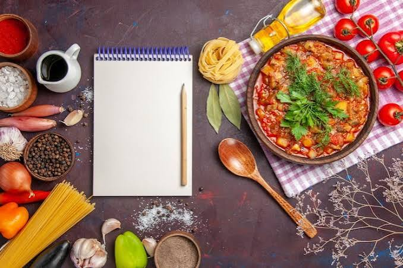

Recipes: A Taste of Tradition

Recipes are more than just a list of ingredients and cooking instructions. Many recipes are passed down from parents and grandparents to their children. Families often teach younger generations how to prepare traditional dishes by cooking together and sharing their own techniques and secrets.
Traditional recipes are an important part of culture because they reflect the history and lifestyle of a community. The ingredients, spices, and cooking methods used in a dish can tell us about where people come from and the traditions that have been followed for many years.
Although recipes are passed from one generation to another, they can also change with time. People may add new ingredients, change the cooking method, or create their own version of a traditional dish. This allows old recipes to stay alive while becoming a part of new family memories and traditions.
In this website, we will be exploring a variety of dishes from different parts of the world.
Dishes We Will Explore
- Biryani
- Pizza
- Tacos
- Sushi
- Pad Thai
- Paella
- Hamburger
- Butter Chicken